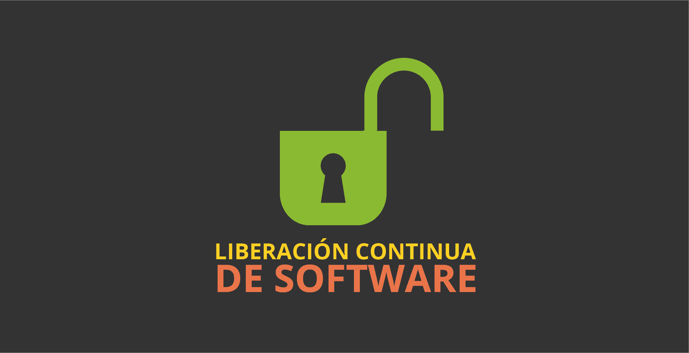

Liberación -- Entrega Continua
La fase de liberación en DevOps es el proceso mediante el cual una versión validada del software se prepara para ser lanzada a producción. Esta fase está muy relacionada con la Entrega Continua (CD), que garantiza que el código esté siempre listo para ser desplegado.
Automatización de la liberación: En DevOps, la liberación no es una fase estática o puntual, es un proceso continuo. Después de que el código pase todas las pruebas, el software se prepara automáticamente para ser liberado. Esto puede implicar la creación de paquetes, documentación, y la configuración de los entornos de producción.
Versionado y control de cambios: La liberación se realiza mediante un sistema de versionado que asegura que las nuevas versiones estén siempre disponibles y que se pueda volver fácilmente a versiones anteriores si es necesario.